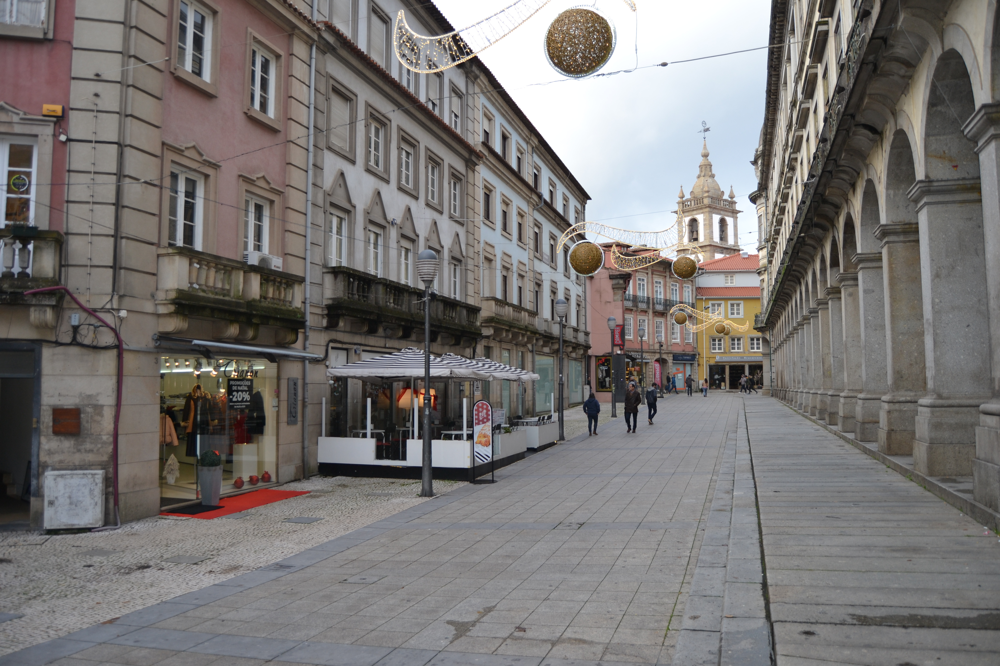
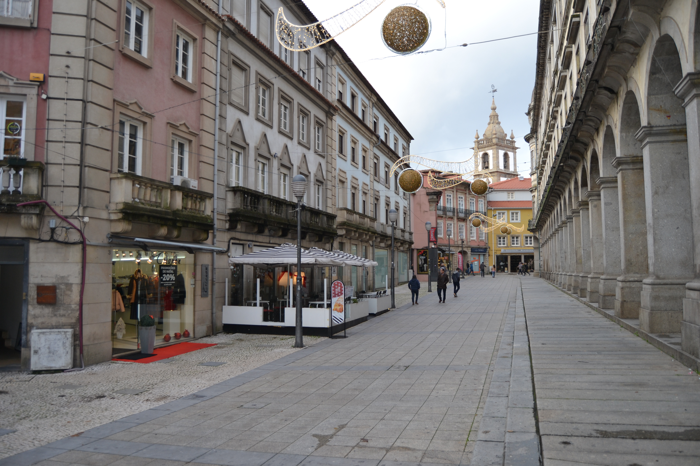

Legenda: Loura e Terreiro do Castelo.
Número: 7
Legenda: Loura e Terreiro do Castelo.
Pequena artéria que, partindo da igreja dos Terceiros, contornava a cidadela medieval, até à rua do Souto.
Segundo Alberto Feio, a construção da cidadela deu origem a um pequeno largo que tomou o nome de Terreiro do Castelo. No séc. XVII deverá ter sido aberta a Loura, uma vez que na planta de Braunio ainda não figura.
Da sua história,que deverá ter sido rica, pouco sabemos; e não vamos falar aqui da vida do Castelo.
Entre 1690 e 1733 foi construída a igreja do Terceiros, da Venerável Ordem Terceira de S. Francisco que, embora já esteja fora desta rua, nela intervirá com a construção da casa do Definitório, em 1758.
De 1750 até aos nossos dias perdeu-se na Loura o magnífico portão de pedra e no seu lugar foi edificada uma boa casa, que tem data de 1824; e no local do prazo nº 3 foram edificadas casas "estilo Português Suave". Os prédios do Terreiro do Castelo foram todos alterados no séc. XX.
Do lado oposto, após a destruição da cidadela em 1905 começou a ser construído o edifício que ainda agora se vê, projectado pelo arquitecto Marques da Silva.
A rua, contudo, mantém ainda o recanto entre as casas dos prazos 2 e 3, embora de forma menos acentuada.
Das 10 casas, desta rua, 3 eram prazos do Cabido.
Estas duas artérias têm hoje o nome comum de rua do Castelo.
Número: 1
Enfiteuta: Manuel Ribeiro Pereira
Foro: 350 reis
Descrição: A casa nº 1 confronta, do sul, com casa foreira à confraria de S. João do Souto.
Número: 2
Enfiteuta: Manuel Ribeiro Pereira
Foro: 100 reis e 1 galinha
Descrição: A casa nº 1 confronta, do sul, com casa foreira à confraria de S. João do Souto.
Número: 3
Enfiteuta: Dr.António Fernandes do Vale, médico
Foro: 100 reis e 4 galinhas
Descrição: Antes de 1480 funcionou aqui o "Forno da Vila"
 
